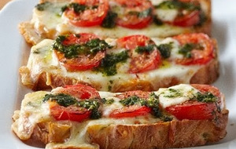
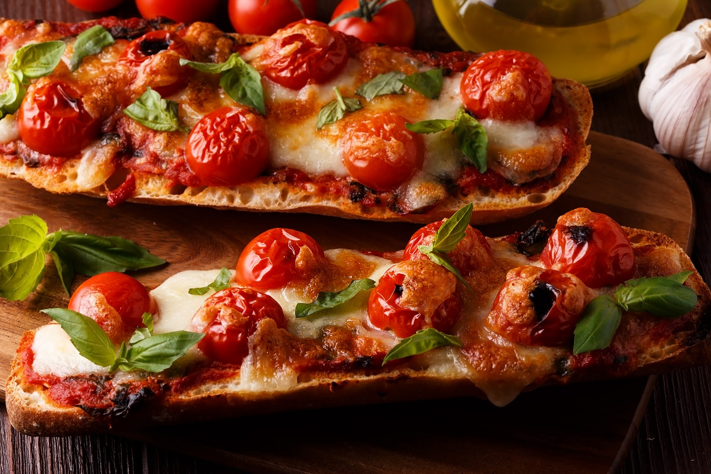

Gegratineerd stokbrood met tomaat en ui:
Ingrediënten:
- 1 stokbrood naar keuze boter of margarine
- plakken jonge of jong belegen kaas
- 1 ui in halve ringen
- 3 of 4 tomaten naar keuze
Snij het stokbrood in 2 gelijke delen en halveer deze. besmeer het stokbrood met boter. Was de tomaten en snij ze in plakken Leg de 2 halve stokbroden met de beboterde kant naar boven op een bord. Leg de tomatenplakken naast elkaar op het stokbrood. Verdeel de uienringen over de tomaten Leg de kaasplakken over het stokbrood zodat de tomaten en het brood helemaal bedekt zijn. Schuif het geheel onder de grill en laat de kaas smelten en een beetje bruin worden. Haal het gerecht uit de oven en serveer direct. Ook lekker met een beetje groene pesto erover.
Gevuld stokbrood:
Ingrediënten:
- 350 gram gemengde groenten naar keuze
- 2 sjalotjes; 200 gram gehakt (liefst runder)
- 2 stokbroodjes
- 100 gram geraspte kaas (hoeft niet); 1 blikje tomatenpuree
kruiden: zout, peper, basilicum, oregano, paprika poeder naar smaak; en voor een echte kokkereller: scheutje rode wijn en/of teentje knoflook
Bereidingswijze:
Voorbereiding
Groenten snijden als het niet een voorverpakte mix is. De stokbroodjes bakken in de oven. Als deze klaar zijn (en wat afgekoeld), een geul maken in de bovenkant van de broden over de hele lengte zodat het brood iets uitgehold kan worden. Het topje bewaren!
Bereidingswijze
De sjalotjes fruiten en het gehakt rul bakken. De klein gesneden groenten even erbij bakken. Het blikje tomatenpuree toevoegen en de kruiden naar smaak. Nu ook eventueel de knoflook en de wijn. De saus in de uitgeholde stokbroden doen en wat geraspte kaas erover. Het bovenkantje van de broden er weer bovenop, en het gehele produkt nog even in de oven tot de kaas gesmolten is. Het kan ook makkelijk van tevoren bereid worden en weer helemaal opgewarmd worden in de oven.